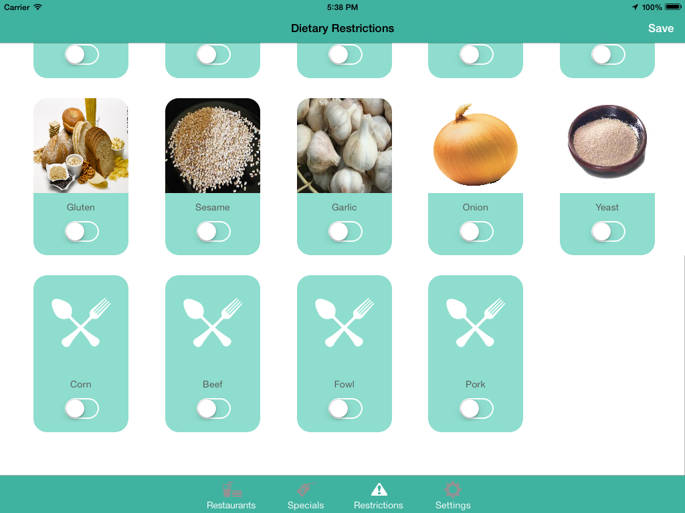
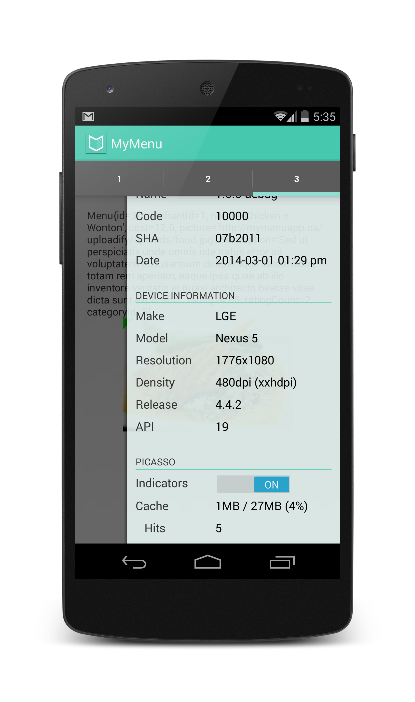

MyMenu Project for CMPUT 400
Introduction
Choosing what you can eat has always been a challenge. Our goal is to eliminate the unknown and allow you understand your choices.
MyMenu lets you quickly find a restaurant and pull up their menu. We'll customize the menu to accommodate any dietary restrictions you may have.
Screenshots


Download
Download link upcoming for Android projects. iOS projects will have to be built manually.
Building
The code base is organized into three main folders ios, android and design.
To deploy a release :
./release.sh $version
iOS
This folder contains the source code for the iOS project. Dependencies are managed using CocoaPods. Be sure to use MyMenu.xcworkspace (not MyMenu.xcodeproject) when in XCode or building from the command line. Both XCode and AppCode will can be used.
List all available targets for this project.
xcodebuild -workspace MyMenu.xcworkspace -list
Generate documentation for the iOS project in website/docs/ios.
xcodebuild -workspace MyMenu.xcworkspace -scheme Documentation
Build the application (requires signing to be set up).
xcodebuild -workspace MyMenu.xcworkspace -scheme MyMenu
Android
This folder contains the source code for the Android project. Dependencies are managed using Gradle. IntelliJ and Android Studio can both be used. Eclipse may used with a gradle plugin, but will fail to recognize our custom build types. It is recommended to use the Gradle wrapper included with the project.
List all available tasks for this project.
./gradlew tasks --all
Clean the project and builds all our build types (release, assemble and beta). Use this before making a pull request.
./gradlew clean build
Build the debug variant of the project. Faster than a full build, use it for debugging.
./gradlew assembleDebug
Run all unit tests (unsupported), checkstyle and instrument tests.
./gradlew check connectedCheck
Build documentation.
./gradlew javadocDebug
Test Users
The following user accounts can be used to test the application:
User Name: test1@test.com
Password : test123
User Name: test2@test.com
Password : test123
License
Copyright (C) 2014 MyMenu, Inc. This program is free software: you can redistribute it and/or modify it under the terms of the GNU General Public License as published by the Free Software Foundation, either version 3 of the License, or (at your option) any later version. This program is distributed in the hope that it will be useful, but WITHOUT ANY WARRANTY; without even the implied warranty of MERCHANTABILITY or FITNESS FOR A PARTICULAR PURPOSE. See the GNU General Public License for more details. You should have received a copy of the GNU General Public License along with this program. If not, see [http://www.gnu.org/licenses/].